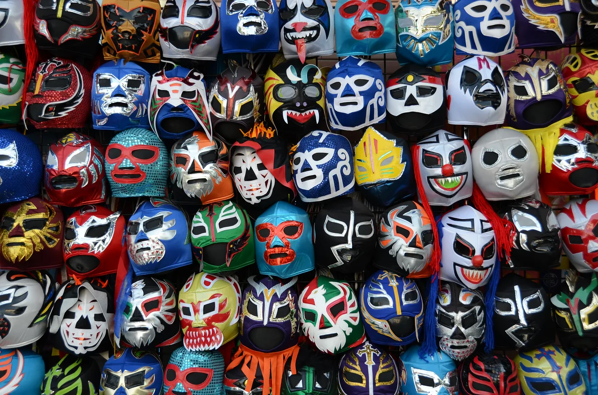

En un sótano de Tepito o Peralvillo, un sastre corta retazos de vinil, satén y charol para coser una segunda piel que nunca mostrará las fatigas del rostro civil. Una indagación sobre la máscara de lucha libre, el secreto artesanal y la liturgia popular del anonimato en México.
Vivimos en una época enferma de visibilidad, una era ruidosa y vigilada donde cada individuo es conminado a exhibir su rostro a todas horas, a sonreír ante cámaras inquisitorias de teléfonos móviles, a registrar su pupila y sus huellas dactilares en los controles aduaneros y a entregar la intimidad de sus facciones a cambio de la ilusión pueril de ser reconocido por una multitud de desconocidos. En medio de esa histeria contemporánea por el escaparate y la confesión pública, produce una extraña y reconfortante conmoción entrar en una pequeña vecindad del barrio de Tepito o de la colonia Doctores, en la Ciudad de México, y encontrar a un hombre de setenta años inclinado sobre una máquina de coser Singer de pedal, uniendo con hilo reforzado dos piezas de satén brillante y charol sintético que tienen por único y sagrado propósito borrar para siempre el rostro humano.

Ese hombre es un mascarero, uno de los últimos artesanos de un oficio sin escuelas ni diplomas universitarios cuya existencia misma constituye una herejía contra las leyes del diseño industrial moderno. En su taller no hay pantallas ni bocetos por computadora: hay hormas de madera gastada con la forma aproximada de un cráneo, retazos de terciopelo de importación, viniles metalizados de color plata, dorado o rojo escarlata, trozos de piel de cerdo para reforzar el mentón y plantillas de cartón duro que guardan, como un secreto de Estado, las curvas exactas de los antifaces de murciélago, los rayos solares o las cruces estilizadas que habrán de ceñirse sobre la cabeza de los dioses de la lona.
La genealogía de este artefacto sagrado tiene una fecha de bautismo casi legendaria. Hacia 1933, cuando la recién fundada Empresa Mexicana de Lucha Libre intentaba consolidar sus primeros carteles en la antigua Arena Modelo, un luchador estadounidense llamado Cyclone Mackey, apodado La Maravilla Enmascarada, acudió al taller de un zapatero de Peralvillo llamado Don Antonio Martínez. El gringo traía consigo una capucha rudimentaria de tela basta que le apretaba los párpados y le impedía respirar durante el combate, y le pidió al zapatero mexicano que le confeccionara algo mejor. Don Antonio, que no sabía de costura de cabeza sino de hormas de zapatos, midió el perímetro craneal, la distancia entre las pupilas, el puente de la nariz y la circunferencia del cuello con una cinta de modista, y tras varios intentos fallidos inventó un patrón de seis piezas anatómicas de piel suave que se ajustaba a los huesos de la cara como una segunda dermis elástica.
Aquel zapatero de barrio no podía sospechar que estaba fundando la indumentaria ritual más poderosa del imaginario popular de América Latina. Unos años más tarde, un joven hidalguense de complexión recia y modales tímidos, llamado Rodolfo Guzmán Huerta, golpeó a la puerta de ese mismo taller buscando un disfraz para ocultar sus derrotas iniciales bajo otros nombres sin fortuna. Don Antonio le cortó una capucha sencilla de piel de cerdo plateada, con dos aberturas triangulares para los ojos y una pequeña rendija para la boca. Había nacido El Santo, el Enmascarado de Plata, el único mito del siglo veinte mexicano capaz de rivalizar en devoción popular con la mismísima Virgen de Guadalupe.
Para comprender el rigor material de este oficio es preciso distinguir entre la máscara de fantasía que se vende en los puestos callejeros y la máscara profesional de combate. La primera, hecha para el regocijo de una tarde o para el disfraz apresurado de un niño, se elabora con una sola capa de licra barata y esponja delgada pegada con adhesivo industrial; resistirá a duras penas tres o cuatro lavadas antes de perder la forma. La máscara de ring, en cambio, es una obra maestra de ingeniería textil construida en tres capas inseparables: la interior, en contacto directo con la piel del deportista, se confecciona con dril de algodón crudo o manta lavada que tiene la virtud de absorber el sudor copioso sin irritar las mejillas ni resbalar sobre el cuero cabelludo; la capa intermedia es un lienzo de lona fina o entretela rígida que actúa como esqueleto estructural, impidiendo que la prenda se deforme cuando el rival tira de ella con saña; y la capa exterior es la que recibe el satén de seda, el lamé japonés o el vinil tornasolado que brillará bajo los reflectores de la arena.
Conviene examinar una máscara de lucha libre profesional no como un accesorio deportivo ni como una curiosidad folclórica para turistas de autobús, sino con la seriedad que merece una armadura litúrgica de alta precisión. A diferencia de las máscaras de carnaval venecianas o las caretas festivas de madera que se colocan sobre la cara mediante un elástico frágil y descansan como una pantalla rígida sobre las facciones, la capucha mexicana envuelve por completo la cabeza, desde la corona hasta la base de la nuca y el ángulo de la mandíbula. No cubre el rostro: lo reemplaza.
El mascarero corta cada una de estas piezas con tijeras pesadas de sastre que pesan más de un kilo y conservan el filo como navajas de afeitar. No hay margen para el titubeo: un milímetro de exceso en el corte de los ojos obligaría al luchador a pestañear con dificultad o le restaría visión periférica en el instante exacto en que un adversario de ciento veinte kilos se arroja sobre él desde la esquina contraria. Una vez cortadas las piezas, viene el ribeteado minucioso de las aberturas: cada orificio ocular y cada contorno de la boca se remata con un bies de piel fina o charol doblado en dos, cosido con puntada menuda para que el borde no corte la piel sudorosa durante los forcejeos de la lucha a ras de lona. Hay en esa delicadeza casi quirúrgica un contraste conmovedor con la violencia brutal del espectáculo que habrá de albergar.
Por la parte trasera, una abertura vertical reforzada con ojillos metálicos permite que la máscara se cierre mediante una agujeta larga de algodón encerado. Pero detrás de esos ojillos, el buen mascarero cose siempre una tira protectora de tela acolchada —la lengüeta— para evitar que el cordón roce directamente la piel del luchador o que el sudor salado carcoma el cuero durante los forcejeos en la lona. El ajuste debe ser absoluto: ni un milímetro de holgura que permita que el rival meta los dedos para despojarlo de la capucha en un descuido, ni una presión excesiva que corte la irrigación sanguínea hacia las sienes o dificulte la respiración cuando el pulso cardíaco supera las ciento setenta pulsaciones por minuto.
El misterio ontológico de la lucha libre radica en esta inversión rotunda de la identidad cotidiana. En el mundo civil de la fábrica, la oficina pública o el taller mecánico, el luchador es un hombre común y corriente, a menudo aplastado por el salario miserable, el hacinamiento del transporte colectivo y la indiferencia burocrática del Estado. Se llama Mario, José o Cuauhtémoc; viaja apretado en el metro con una maleta de lona entre las piernas donde guarda sus botas gastadas, sus mallas de licra y su toalla húmeda. Nadie lo mira en el andén; nadie le cede el asiento ni le pide un autógrafo. Es un número estadístico en la urbe de veintidós millones de almas.
Existe además en la máscara una semiótica moral de una precisión geométrica implacable, dividida entre los dos bandos eternos que estructuran el drama del pancracio: los técnicos y los rudos. El técnico, encarnación de la justicia, del juego limpio y del respeto a los reglamentos deportivos, lleva máscaras de líneas puras y ascendentes: alas de águila que apuntan al cielo, destellos solares, cruces luminosas o antifaces que evocan la serenidad vigilante de los arcángeles barrocos. El rudo, por el contrario, encarna la trampa descarada, la fuerza bruta sin ley, la corrupción impune que el ciudadano mexicano reconoce a diario en los despachos del poder y en las esquinas sombrías de la urbe; su máscara celebra el espanto y el descaro: colmillos de vampiro que gotean sangre simulada, cuernos de demonio, telarañas que atrapan la mirada, cicatrices pintadas o fauces de fiera que amenazan con devorar la compostura de las buenas familias.

Pero al cruzar las puertas de los vestidores de la Arena México o de la Arena Coliseo, ese hombre humilde abre la cremallera de su maleta, saca la capucha de seda y charol y realiza el rito de la transubstanciación profana. Al ceñirse la máscara sobre las sienes y anudar las agujetas con la fuerza de sus nudillos, Mario o Cuauhtémoc desaparece de la faz de la tierra. Quien emerge por el túnel hacia la pasarela, bajo las luces incandescentes y el rugido de quince mil gargantas enardecidas, es Mil Máscaras, Huracán Ramírez, Blue Demon o Canek: un semidiós totémico que no envejece, que no conoce la humillación del salario mínimo y que puede volar desde la tercera cuerda para quebrar las leyes de la física y de la gravedad social.
El antropólogo francés Roger Caillois, en su célebre tratado sobre los juegos y los hombres, observó que toda sociedad humana oscila entre dos pulsiones fundamentales: el orden reglamentado del cálculo y la embriaguez del vértigo y la máscara. En la cultura occidental ilustrada, la máscara fue relegada al rincón del engaño, de la hipocresía y del delito: quien se oculta el rostro es sospechoso de falsedad o cobardía. La genialidad popular mexicana consistió en subvertir por completo ese prejuicio colonial: en el cuadrilátero, quitarse la máscara no es un acto de honestidad, sino una profanación obscena; llevar la máscara puesta es la prueba suprema de nobleza, constancia y pureza interior.
Quien busque los antecedentes remotos de esta dramaturgia no debe conformarse con el vodevil o con las ferias ambulantes del siglo diecinueve. La raíz última de la máscara de lucha libre se hunde en la memoria milenaria de Mesoamérica, en aquellas máscaras funerarias de jade verde que cubrían el rostro de los gobernantes mayas de Palenque o en los yelmos de madera y plumas con forma de jaguar y de águila con que los guerreros mexicas se arrojaban a la batalla sagrada. El concepto nahua del nahual —la creencia de que cada ser humano posee un doble animal cuya fuerza espiritual puede invocar en los momentos decisivos del destino— revive intacto cada viernes por la noche en la colonia de los Doctores. El hombre que se coloca la máscara de tigre, de serpiente o de demonio no está fingiendo ser otro: está despertando a la fiera protectora que la monotonía del trabajo civil mantiene adormecida.
De ahí el drama estremecedor que acompaña al combate de apuestas, esa liturgia extrema conocida como máscara contra máscara. En ninguna otra disciplina deportiva del planeta existe una sanción tan definitiva y trágica como la pérdida de la capucha. Dos atletas que han consagrado diez, veinte o treinta años de su existencia a construir un personaje se enfrentan a tres caídas sobre el ring, sabiendo que uno de ellos saldrá despojado para siempre de su piel mítica. Cuando el árbitro cuenta las tres palmadas fatales y el vencido debe desatar con dedos temblorosos las agujetas de su máscara ante el público enardecido, lo que se presencia en la arena no es un partido de fútbol que se pierde para volver a jugar el domingo siguiente: es la muerte simbólica de un dios y el nacimiento desolador de un hombre mortal.
El público contiene el aliento mientras la tela se desprende despacio de la frente. Aparece entonces un rostro empapado en sudor, a menudo marcado por cicatrices en las cejas causadas por cabezazos antiguos, con los ojos hinchados por el castigo y la vergüenza; el anunciador oficial toma el micrófono y proclama ante la multitud el nombre civil, la edad y el lugar de origen del derrotado: Se llama Roberto González, tiene cuarenta y cinco años, es originario de Guadalajara y pierde su máscara ante la afición. En ese instante preciso, la magia se desvanece y el misterio se desploma hacia la grisura del registro civil. El héroe vuelve a ser hombre, y ese hombre ya nunca volverá a volar con la misma ligereza.
Por eso Rodolfo Guzmán, El Santo, cuidó su máscara con un celo sacerdotal que hoy parece inverosímil. Durante más de cuarenta años de carrera profesional jamás permitió que ningún fotógrafo ni periodista lo viera con la cara descubierta. Viajaba en vuelos comerciales con una máscara de seda suave y lentes oscuros; cuando debía cruzar las oficinas de migración en aeropuertos internacionales, pedía a los oficiales ingresar a una habitación reservada donde únicamente el agente de turno podía cotejar su rostro con el pasaporte; en los restaurantes, mandaba a pedir un biombo o se colocaba una capucha con una abertura generosa en la barbilla para comer discretamente sin descubrirse la nariz ni los pómulos.
Solo una vez, una sola semana antes de su muerte, anciano ya y retirado de los encordados, El Santo acudió como invitado a un programa de televisión conducido por Jacobo Zabludovsky. En medio de la entrevista, en un gesto inesperado que paralizó a la nación entera, levantó el borde inferior de su máscara de plata durante apenas tres segundos, dejando al descubierto una fracción de su rostro surcado por las arrugas del tiempo, antes de volver a bajarla con firmeza. Fue su manera callada y aristocrática de despedirse del mundo: el héroe mostraba que debajo del mito latía un corazón cansado, pero la máscara quedaba sellada para la eternidad. Pocos días después, al morir de un infarto, fue sepultado con su capucha puesta, tal como había ordenado en su testamento.
Pero la máscara de lucha libre no se agota en el altar de los campeones consagrados; vive también en la banqueta, en las manos del niño que sale de la función dominical llevando en la cabeza una réplica de esponja y tela sintética comprada por cincuenta pesos en un puesto ambulante de la avenida Cuauhtémoc. Ese niño subirá al trolebús de regreso a su colonia mirando el mundo a través de los ojos rasgados de su héroe preferido, sintiendo que por un par de horas las esquinas peligrosas de la ciudad no tienen poder sobre él. En ese gesto infantil y humilde se renueva el pacto secular de la cultura popular mexicana: el derecho inalienable de inventarse un rostro que no le rinda cuentas a la fealdad del mundo.
Fuentes.
- Monsiváis, Carlos (1995). Los rituales del caos: La hora de la lucha libre. Ediciones Era.
- Caillois, Roger (1958). Teoría de los juegos y la máscara: De la agonalidad al simulacro. Gallimard.
- Barthes, Roland (1957). Mitologías: El mundo donde se lucha. Éditions du Seuil.
Investigación documental y etnográfica sobre la sastrería de máscaras y la dramaturgia de la lucha libre en México.
Fuentes consultadas el 19.11.2026. Análisis e interpretación: RUMMOR. Edición privada para revisión.